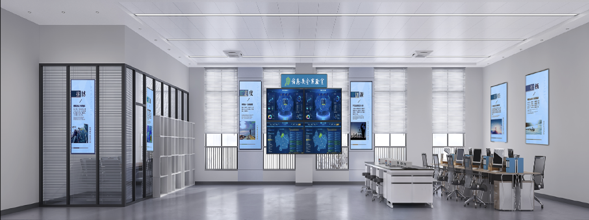

实验室简介
信息安全实验室定位为国内领先的智能汽车领域安全实验室，重点关注智能汽车人工智能模型与数据的安全研究，承担智能网联汽车信息/数据安全、人工智能与具身智能安全、车载AR空间计算引擎等方面科研项目，开展智能网联汽车安全、车联网数据安全、车载模型安全等方面教学活动，支持产业界算法落地与实际应用。
智能网联汽车信息安全实验室拥有一支高水平的科研团队，涵盖专职与兼职教授4人，支撑教师团队9人，研究生8人，团队成员在信息安全、智能网联汽车、人工智能等领域具备丰富的研究与工程经验。近年团队成果显著，荣获2024年FCS最佳论文奖、重庆市科技进步一等奖、大学生信息安全竞赛二等奖等重要奖项。
